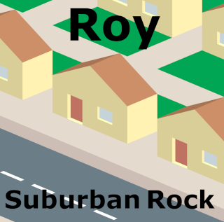

Featuring such hits as "Take a Rocket to Russia," "Hot Like Mel Gibson" and capping with "We are The Grandaddies of Punk Rock" this Roy album will make you change your socks spontaneously. This was the first Roy album to be properly recorded on reel to reel tape and digitally mastered.

Released in December 25th 2000
Spotify,
Apple Music,
iTunes,
YouTube,
YouTube Music,
Amazon,
Amazon Music and
Tidal.
We're also on Bandcamp under the pay as you like model.